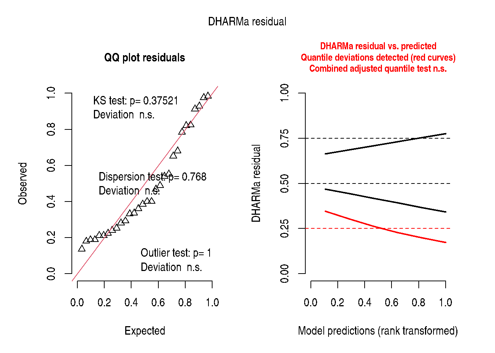

Chapter 9: Multi-Level Models
Nested Factorial, Split-Plot, and Blocked Designs
2026-05-11
Source:vignettes/chapter-09-multi-level-models.qmd
1 Overview
Chapter 9 extends the GLMM framework to binary and binomial responses. A binary observation \(y_i \in \{0, 1\}\) follows a Bernoulli distribution; a binomial aggregate \(y_i \sim \text{Binomial}(n_i, p_i)\) counts successes among \(n_i\) trials.
The canonical link for both is the logit:
\[\eta_i = \text{logit}(p_i) = \log\frac{p_i}{1-p_i} = \mathbf{x}_i^\top\boldsymbol{\beta} + \mathbf{z}_i^\top\mathbf{b}\]
with \(\mathbf{b} \sim \mathcal{N}(\mathbf{0}, \mathbf{G})\).
2 Example 9.1 — Nested Factorial Structure
Dataset: 3 sets, 2 treatments per set, arranged in blocks nested within sets.
data(DataSet9.1)
DataSet9.1$block <- factor(DataSet9.1$block)
DataSet9.1$set <- factor(DataSet9.1$set)
DataSet9.1$trt <- factor(DataSet9.1$trt)
str(DataSet9.1)'data.frame': 30 obs. of 4 variables:
$ block: Factor w/ 10 levels "1","2","3","4",..: 1 1 1 2 2 2 3 3 3 4 ...
$ trt : Factor w/ 6 levels "1","2","3","4",..: 1 2 3 4 5 6 1 2 3 4 ...
$ set : Factor w/ 2 levels "1","2": 1 1 1 2 2 2 1 1 1 2 ...
$ y : num 4.6 17.8 16.6 2.2 7.1 14.9 0.4 0.8 0.8 1 ...2.1 Fit the LMM (Gaussian approximation)
Exam9.1Lmer <- lmerTest::lmer(
y ~ set + set:trt + (1 | set:block),
data = DataSet9.1,
control = lme4::lmerControl(optimizer = "bobyqa")
)
summary(Exam9.1Lmer)Linear mixed model fit by REML. t-tests use Satterthwaite's method [
lmerModLmerTest]
Formula: y ~ set + set:trt + (1 | set:block)
Data: DataSet9.1
Control: lme4::lmerControl(optimizer = "bobyqa")
REML criterion at convergence: 170.3
Scaled residuals:
Min 1Q Median 3Q Max
-1.5721 -0.2644 -0.1207 0.3136 2.0303
Random effects:
Groups Name Variance Std.Dev.
set:block (Intercept) 60.55 7.781
Residual 22.75 4.770
Number of obs: 30, groups: set:block, 10
Fixed effects:
Estimate Std. Error df t value Pr(>|t|)
(Intercept) 8.200 4.082 11.669 2.009 0.068249 .
set2 8.960 5.772 11.669 1.552 0.147295
set1:trt2 0.700 3.017 16.000 0.232 0.819445
set1:trt3 0.540 3.017 16.000 0.179 0.860180
set2:trt4 -12.720 3.017 16.000 -4.217 0.000655 ***
set2:trt5 -9.880 3.017 16.000 -3.275 0.004762 **
---
Signif. codes: 0 '***' 0.001 '**' 0.01 '*' 0.05 '.' 0.1 ' ' 1
Correlation of Fixed Effects:
(Intr) set2 st1:t2 st1:t3 st2:t4
set2 -0.707
set1:trt2 -0.370 0.261
set1:trt3 -0.370 0.261 0.500
set2:trt4 0.000 -0.261 0.000 0.000
set2:trt5 0.000 -0.261 0.000 0.000 0.500
fit warnings:
fixed-effect model matrix is rank deficient so dropping 6 columns / coefficients
stats::anova(Exam9.1Lmer, ddf = "Kenward-Roger")| Sum Sq | Mean Sq | NumDF | DenDF | F value | Pr(>F) | |
|---|---|---|---|---|---|---|
| set | 54.81561 | 54.81561 | 1 | 11.66907 | 2.409407 | 0.1472945 |
| set:trt | 447.14267 | 111.78567 | 4 | 16.00000 | 4.913512 | 0.0088978 |
2.2 Estimated Marginal Means
set = 1:
trt emmean SE df lower.CL upper.CL
1 8.20 4.08 11.7 -0.7212 17.1
2 8.90 4.08 11.7 -0.0212 17.8
3 8.74 4.08 11.7 -0.1812 17.7
set = 2:
trt emmean SE df lower.CL upper.CL
4 4.44 4.08 11.7 -4.4812 13.4
5 7.28 4.08 11.7 -1.6412 16.2
6 17.16 4.08 11.7 8.2388 26.1
Degrees-of-freedom method: kenward-roger
Confidence level used: 0.95
emmeans::contrast(emm9.1, method = "pairwise", by = "set")set = 1:
contrast estimate SE df t.ratio p.value
trt1 - trt2 -0.70 3.02 16 -0.232 0.9999
trt1 - trt3 -0.54 3.02 16 -0.179 1.0000
trt2 - trt3 0.16 3.02 16 0.053 1.0000
set = 2:
contrast estimate SE df t.ratio p.value
trt4 - trt5 -2.84 3.02 16 -0.941 0.9295
trt4 - trt6 -12.72 3.02 16 -4.217 0.0071
trt5 - trt6 -9.88 3.02 16 -3.275 0.0452
Degrees-of-freedom method: kenward-roger
P value adjustment: tukey method for comparing a family of 6 estimates 2.3 Interpretation
if (requireNamespace("report", quietly = TRUE)) {
report::report(Exam9.1Lmer)
}We fitted a linear mixed model (estimated using REML and BOBYQA optimizer) to
predict y with set and trt (formula: y ~ set + set:trt). The model included set
as random effects (formula: ~1 | set:block). The model's total explanatory
power is substantial (conditional R2 = 0.77) and the part related to the fixed
effects alone (marginal R2) is of 0.16. The model's intercept, corresponding to
set = 1 and trt = 1, is at 8.20 (95% CI [-0.26, 16.66], t(22) = 2.01, p =
0.057). Within this model:
- The effect of set [2] is statistically non-significant and positive (beta =
8.96, 95% CI [-3.01, 20.93], t(22) = 1.55, p = 0.135; Std. beta = 0.97, 95% CI
[-0.33, 2.28])
- The effect of set [1] × trt2 is statistically non-significant and positive
(beta = 0.70, 95% CI [-5.56, 6.96], t(22) = 0.23, p = 0.819; Std. beta = 0.08,
95% CI [-0.60, 0.76])
- The effect of set [1] × trt3 is statistically non-significant and positive
(beta = 0.54, 95% CI [-5.72, 6.80], t(22) = 0.18, p = 0.860; Std. beta = 0.06,
95% CI [-0.62, 0.74])
- The effect of set [2] × trt4 is statistically significant and negative (beta
= -12.72, 95% CI [-18.98, -6.46], t(22) = -4.22, p < .001; Std. beta = -1.38,
95% CI [-2.06, -0.70])
- The effect of set [2] × trt5 is statistically significant and negative (beta
= -9.88, 95% CI [-16.14, -3.62], t(22) = -3.28, p = 0.003; Std. beta = -1.07,
95% CI [-1.75, -0.39])
Standardized parameters were obtained by fitting the model on a standardized
version of the dataset. 95% Confidence Intervals (CIs) and p-values were
computed using a Wald t-distribution approximation.3 Example 9.2 — Split-Plot with Row-Column Structure
data(DataSet9.2)
DataSet9.2$block <- factor(DataSet9.2$block)
DataSet9.2$row <- factor(DataSet9.2$row)
DataSet9.2$col <- factor(DataSet9.2$col)
DataSet9.2$a <- factor(DataSet9.2$a)
DataSet9.2$b <- factor(DataSet9.2$b)
str(DataSet9.2)'data.frame': 36 obs. of 6 variables:
$ block: Factor w/ 9 levels "1","2","3","4",..: 1 1 1 1 2 2 2 2 3 3 ...
$ row : Factor w/ 2 levels "1","2": 1 1 2 2 1 1 2 2 1 1 ...
$ col : Factor w/ 2 levels "1","2": 1 2 1 2 1 2 1 2 1 2 ...
$ a : Factor w/ 3 levels "1","2","3": 1 1 2 2 1 1 2 2 1 1 ...
$ b : Factor w/ 3 levels "1","2","3": 1 2 1 2 1 3 1 3 2 3 ...
$ y : num 19.2 23.2 15 15.9 22.4 27.1 21.3 22.9 29.6 27.4 ...
Exam9.2Lmer <- lmerTest::lmer(
y ~ a * b + (1 | block) + (1 | block:a) + (1 | block:b),
data = DataSet9.2,
control = lme4::lmerControl(optimizer = "bobyqa")
)
summary(Exam9.2Lmer)Linear mixed model fit by REML. t-tests use Satterthwaite's method [
lmerModLmerTest]
Formula: y ~ a * b + (1 | block) + (1 | block:a) + (1 | block:b)
Data: DataSet9.2
Control: lme4::lmerControl(optimizer = "bobyqa")
REML criterion at convergence: 163.6
Scaled residuals:
Min 1Q Median 3Q Max
-0.85748 -0.31360 0.04801 0.29434 0.97549
Random effects:
Groups Name Variance Std.Dev.
block:b (Intercept) 8.161 2.857
block:a (Intercept) 9.778 3.127
block (Intercept) 2.635 1.623
Residual 2.245 1.498
Number of obs: 36, groups: block:b, 18; block:a, 18; block, 9
Fixed effects:
Estimate Std. Error df t value Pr(>|t|)
(Intercept) 21.2455 2.0947 24.3769 10.143 3.16e-10 ***
a2 0.9660 2.3340 12.8830 0.414 0.685772
a3 -0.1162 2.3340 12.8830 -0.050 0.961065
b2 9.1852 2.2119 12.5580 4.153 0.001220 **
b3 6.9539 2.2119 12.5580 3.144 0.008059 **
a2:b2 -2.9890 1.9226 5.9938 -1.555 0.171074
a3:b2 -11.8429 1.9226 5.9938 -6.160 0.000843 ***
a2:b3 -2.2593 1.9226 5.9938 -1.175 0.284516
a3:b3 -9.5602 1.9226 5.9938 -4.972 0.002528 **
---
Signif. codes: 0 '***' 0.001 '**' 0.01 '*' 0.05 '.' 0.1 ' ' 1
Correlation of Fixed Effects:
(Intr) a2 a3 b2 b3 a2:b2 a3:b2 a2:b3
a2 -0.557
a3 -0.557 0.500
b2 -0.528 0.179 0.179
b3 -0.528 0.179 0.179 0.500
a2:b2 0.229 -0.412 -0.206 -0.435 -0.217
a3:b2 0.229 -0.206 -0.412 -0.435 -0.217 0.500
a2:b3 0.229 -0.412 -0.206 -0.217 -0.435 0.500 0.250
a3:b3 0.229 -0.206 -0.412 -0.217 -0.435 0.250 0.500 0.500
stats::anova(Exam9.2Lmer, ddf = "Kenward-Roger")| Sum Sq | Mean Sq | NumDF | DenDF | F value | Pr(>F) | |
|---|---|---|---|---|---|---|
| a | 29.71284 | 14.856421 | 2 | 8.842661 | 6.617342 | 0.0175034 |
| b | 10.43492 | 5.217462 | 2 | 8.472110 | 2.323960 | 0.1568158 |
| a:b | 94.71857 | 23.679643 | 4 | 5.853597 | 10.547380 | 0.0075334 |
a b emmean SE df lower.CL upper.CL
1 1 21.2 2.18 24.4 16.7 25.7
2 1 22.2 2.18 24.4 17.7 26.7
3 1 21.1 2.18 24.4 16.6 25.6
1 2 30.4 2.18 24.4 25.9 34.9
2 2 28.4 2.18 24.4 23.9 32.9
3 2 18.5 2.18 24.4 14.0 23.0
1 3 28.2 2.18 24.4 23.7 32.7
2 3 26.9 2.18 24.4 22.4 31.4
3 3 18.5 2.18 24.4 14.0 23.0
Degrees-of-freedom method: kenward-roger
Confidence level used: 0.95
emmeans::contrast(emm9.2, method = "pairwise",
by = "a", adjust = "tukey")a = 1:
contrast estimate SE df t.ratio p.value
b1 - b2 -9.1852 2.34 12.9 -3.933 0.0046
b1 - b3 -6.9539 2.34 12.9 -2.978 0.0271
b2 - b3 2.2313 2.34 12.9 0.956 0.6165
a = 2:
contrast estimate SE df t.ratio p.value
b1 - b2 -6.1962 2.34 12.9 -2.653 0.0491
b1 - b3 -4.6946 2.34 12.9 -2.010 0.1492
b2 - b3 1.5016 2.34 12.9 0.643 0.7995
a = 3:
contrast estimate SE df t.ratio p.value
b1 - b2 2.6577 2.34 12.9 1.138 0.5089
b1 - b3 2.6063 2.34 12.9 1.116 0.5215
b2 - b3 -0.0514 2.34 12.9 -0.022 0.9997
Degrees-of-freedom method: kenward-roger
P value adjustment: tukey method for comparing a family of 3 estimates 4 Example 9.3 — Factorial with Blocks
data(DataSet9.3)
DataSet9.3$block <- factor(DataSet9.3$block)
DataSet9.3$aa <- factor(DataSet9.3$a)
DataSet9.3$bb <- factor(DataSet9.3$b)
DataSet9.3$cc <- factor(DataSet9.3$c)
DataSet9.3$a2 <- DataSet9.3$a^2
DataSet9.3$b2 <- DataSet9.3$b^2
DataSet9.3$c2 <- DataSet9.3$c^2
DataSet9.3$ab <- DataSet9.3$a * DataSet9.3$b
DataSet9.3$ac <- DataSet9.3$a * DataSet9.3$c
DataSet9.3$bc <- DataSet9.3$b * DataSet9.3$c
str(DataSet9.3)'data.frame': 28 obs. of 14 variables:
$ block: Factor w/ 7 levels "1","2","3","4",..: 1 1 1 1 2 2 2 2 3 3 ...
$ a : int 0 0 0 0 1 1 -1 -1 1 1 ...
$ b : int 1 1 -1 -1 0 0 0 0 1 -1 ...
$ c : int 1 -1 1 -1 1 -1 1 -1 0 0 ...
$ y : num 50.2 50.5 46.6 45.3 49.5 50.3 45.6 44.1 45.8 41.8 ...
$ aa : Factor w/ 3 levels "-1","0","1": 2 2 2 2 3 3 1 1 3 3 ...
$ bb : Factor w/ 3 levels "-1","0","1": 3 3 1 1 2 2 2 2 3 1 ...
$ cc : Factor w/ 3 levels "-1","0","1": 3 1 3 1 3 1 3 1 2 2 ...
$ a2 : num 0 0 0 0 1 1 1 1 1 1 ...
$ b2 : num 1 1 1 1 0 0 0 0 1 1 ...
$ c2 : num 1 1 1 1 1 1 1 1 0 0 ...
$ ab : int 0 0 0 0 0 0 0 0 1 -1 ...
$ ac : int 0 0 0 0 1 -1 -1 1 0 0 ...
$ bc : int 1 -1 -1 1 0 0 0 0 0 0 ...
Exam9.3Lmer <- lmerTest::lmer(
y ~ a + a2 + b + b2 + c + bc + (1 | block),
data = DataSet9.3,
control = lme4::lmerControl(optimizer = "bobyqa")
)
summary(Exam9.3Lmer)Linear mixed model fit by REML. t-tests use Satterthwaite's method [
lmerModLmerTest]
Formula: y ~ a + a2 + b + b2 + c + bc + (1 | block)
Data: DataSet9.3
Control: lme4::lmerControl(optimizer = "bobyqa")
REML criterion at convergence: 93.4
Scaled residuals:
Min 1Q Median 3Q Max
-1.5824 -0.5006 -0.2802 0.6912 1.5429
Random effects:
Groups Name Variance Std.Dev.
block (Intercept) 0.6776 0.8231
Residual 1.8206 1.3493
Number of obs: 28, groups: block, 7
Fixed effects:
Estimate Std. Error df t value Pr(>|t|)
(Intercept) 50.0850 0.8244 4.0000 60.753 4.4e-07 ***
a 1.6000 0.3373 17.0000 4.743 0.000188 ***
a2 -3.3025 0.8244 4.0000 -4.006 0.016050 *
b 1.6938 0.3373 17.0000 5.021 0.000105 ***
b2 -3.5150 0.8244 4.0000 -4.264 0.013015 *
c 0.5188 0.3373 17.0000 1.538 0.142491
bc -1.1625 0.4770 17.0000 -2.437 0.026101 *
---
Signif. codes: 0 '***' 0.001 '**' 0.01 '*' 0.05 '.' 0.1 ' ' 1
Correlation of Fixed Effects:
(Intr) a a2 b b2 c
a 0.000
a2 -0.667 0.000
b 0.000 0.000 0.000
b2 -0.667 0.000 0.167 0.000
c 0.000 0.000 0.000 0.000 0.000
bc 0.000 0.000 0.000 0.000 0.000 0.000
stats::anova(Exam9.3Lmer, ddf = "Kenward-Roger", type = 1)| Sum Sq | Mean Sq | NumDF | DenDF | F value | Pr(>F) | |
|---|---|---|---|---|---|---|
| a | 40.960000 | 40.960000 | 1 | 17 | 22.498223 | 0.0001881 |
| a2 | 20.335065 | 20.335065 | 1 | 4 | 11.169503 | 0.0287800 |
| b | 45.900625 | 45.900625 | 1 | 17 | 25.211975 | 0.0001048 |
| b2 | 33.097032 | 33.097032 | 1 | 4 | 18.179307 | 0.0130150 |
| c | 4.305625 | 4.305625 | 1 | 17 | 2.364964 | 0.1424910 |
| bc | 10.811250 | 10.811250 | 1 | 17 | 5.938328 | 0.0261009 |
5 Overdispersion Diagnostics
if (requireNamespace("performance", quietly = TRUE)) {
tryCatch(
performance::check_model(Exam9.1Lmer),
error = function(e) message("check_model() error: ", conditionMessage(e))
)
}
if (requireNamespace("DHARMa", quietly = TRUE)) {
sim_r <- DHARMa::simulateResiduals(Exam9.1Lmer, plot = TRUE)
}
6 Key Takeaways
- Nested and split-plot structures require matching random effects specifications to the design structure.
- The
(1 | set:block)term captures blocks nested within sets without adding an unprinted random set variance component. -
emmeansprovides estimated marginal means with proper standard errors that account for the random effects structure. - DHARMa diagnostics help identify departures from model assumptions.
7 References
Stroup, W. W., Ptukhina, M., and Garai, S. (2024). Generalized Linear Mixed Models: Modern Concepts, Methods and Applications (2nd ed.). CRC Press.